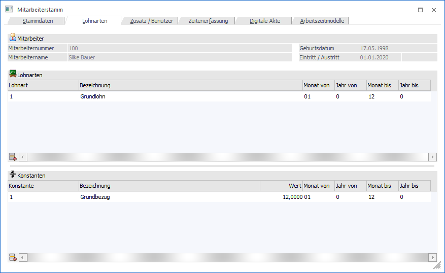
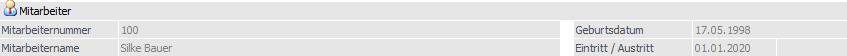

In dem Register "Lohnarten" können die Standard-Lohnarten des Mitarbeiters hinterlegt werden.
Hinweis
Für Arbeitnehmer ist das Register "Lohnarten" nicht anwählbar!

Folgende Informationen und Eingabefelder stehen zur Verfügung:
Mitarbeiter

Ø Mitarbeiternummer / Mitarbeitername / Geburtsdatum / Eintritt / Austritt
Im oberen Teil des Fensters werden Daten des Mitarbeiters, welche gerade bearbeitet wird angezeigt.
Tabelle "Lohnarten"
Ø Lohnart
Hier wird die Lohnartennummer eingetragen. Durch Drücken der F9-Taste kann nach allen bereits angelegten Lohnarten gesucht werden.
Ø Bezeichnung
In diesem Feld wird die Lohnartenbezeichnung angezeigt. Dieses Feld kann nicht verändert werden.
Ø Monat von
Aus der Auswahllistbox kann das Monat gewählt werden, ab dem diese Lohnart ihre Gültigkeit hat.
Ø Jahr von
Hier wird das Jahr eingetragen, in dem die Lohnart gültig ist. Standardmäßig wird immer 0 vorgeschlagen. Das bedeutet, dass die Lohnart immer verwendet wird. Soll die Lohnart nur beschränkt verwendet werden, kann hier die Jahreszahl eingetragen werden.
Ø Monat bis
Aus der Auswahllistbox kann das Monat gewählt werden, bis zu dem diese Lohnart ihre Gültigkeit hat.
Ø Jahr bis
Hier wird das Jahr eingetragen, in dem die Lohnart gültig ist. Standardmäßig wird immer 0 vorgeschlagen. Das bedeutet, dass die Lohnart immer verwendet wird. Soll die Lohnart nur beschränkt verwendet werden, kann hier die Jahreszahl eingetragen werden.
Tabelle "Konstanten"
In dieser Tabelle können Konstanten verwalten werden, die für die automatische Berechnung von Lohnarten verwendet werden können. Dies kann z.B. der monatliche Grundbezug, ein Sachbezug oder dergleichen sein. Die aktuell gültigen Konstanten werden fett dargestellt, sodass man sie leichter erkennen kann. Für Mitarbeiter haben die Konstanten keine Funktion, außer dass man die Werte erfassen und nachsehen kann.
Ø Konstante
Hier wird die Konstantennummer eingetragen. Durch Drücken der F9-Taste kann nach allen angelegten Konstanten gesucht werden. Eine Konstante kann auch öfters vergeben werden.
Ø Bezeichnung
Hier wird die Bezeichnung der Konstante angezeigt.
Ø Wert
In diesem Feld wird der Betrag eingegeben, mit der die Konstante abgerechnet werden soll, wobei der Wert bis zu 4 Nachkommastellen haben kann. Abhängig von der Formel, die mit dieser Konstante rechnet, wird dieser Wert weiterbehandelt.
Ø Monat von
Aus der Auswahllistbox kann das Monat gewählt werden, ab dem diese Konstante ihre Gültigkeit hat.
Ø Jahr von
Hier wird das Jahr eingetragen, in dem die Konstante gültig ist. Standardmäßig wird immer 0 vorgeschlagen. Das bedeutet, dass die Konstante immer verwendet wird. Soll die Konstante nur beschränkt verwendet werden, kann hier die Jahreszahl eingetragen werden.
Ø Monat bis
Aus der Auswahllistbox kann das Monat gewählt werden, bis zu dem diese Konstante ihre Gültigkeit hat.
Ø Jahr bis
Hier wird das Jahr eingetragen, in dem die Konstante gültig ist. Standardmäßig wird immer 0 vorgeschlagen. Das bedeutet, dass die Konstante immer verwendet wird. Soll die Konstante nur beschränkt verwendet werden, kann hier die Jahreszahl eingetragen werden.
Tabellenbuttons

Ø Zeile entfernen
Mit dem Button können Zeilen aus den Tabellen gelöscht werden.
Ø Ausgabe Excel
Durch Anwahl des Buttons "Ausgabe Excel" wird der Inhalt der aktuellen Tabelle an Microsoft Excel übergeben.
Ø Tabelleneinstellungen speichern
Die Spalten einer Tabelle können grundsätzlich an beliebige Positionen verschoben, bzw. in der Breite entsprechend angepasst werden. Durch Anwahl des Buttons "Tabelleneinstellungen speichern" werden die Einstellungen benutzerspezifisch gespeichert und bei dem nächsten Aufruf des Programmpunktes wieder vorgeschlagen.
Ø Gesamteinstellungen speichern
Im Gegensatz zu "Tabelleneinstellungen speichern" können mit "Gesamteinstellungen speichern" mehrere Tabellenaufbauten gespeichert und nach Wunsch geladen werden. Zusätzlich werden Sonderfunktionen der Tabelle (z.B. "Spalte gruppieren") ebenfalls bei der Speicherung bedacht.